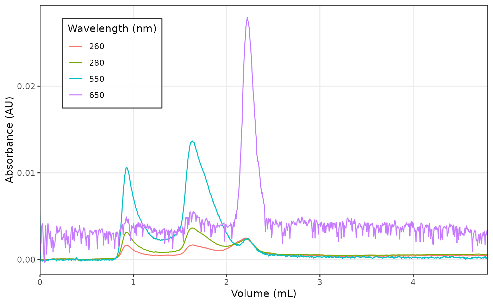

Read BioRad QuadTech Chromatogram Files
chrom_read_quadtech(file, interp_volume = TRUE)Exported `.TXT` chromatogram file from the BioRad QuadTech.
Logical. If TRUE, interpolates the values in the volume column based on the values in the time column.
a [tibble][tibble::tibble-package]
fl <- system.file("extdata",
"sec.txt",
package = "chromr"
)
# just read
fl %>%
chrom_read_quadtech()
#> # A tibble: 960 × 10
#> time percent_b au m_s_cm psi volume a280 a260 a550 a650
#> <dbl> <dbl> <dbl> <dbl> <dbl> <dbl> <dbl> <dbl> <dbl> <dbl>
#> 1 0 0 0 16.0 265 0 0 0 5.50e-3 0
#> 2 1 0 0 16.0 266 0.00501 4 e-6 1.3e-5 -1.6 e-4 1.88e-3
#> 3 2 0 0 16.0 270 0.0100 0 -8 e-6 -6.4 e-5 1.80e-3
#> 4 3 0 0 16.0 272 0.0150 -1.3e-5 -2.2e-5 -6.4 e-5 3.39e-3
#> 5 4 0 0 16.0 272 0.0200 -6 e-6 -1.5e-5 -9.5 e-5 3.91e-3
#> 6 5 0 0 16.0 276 0.0250 -6 e-6 -1.8e-5 -1.28e-4 4.13e-3
#> 7 6 0 0 16.0 275 0.0300 -6 e-6 -2.9e-5 -1.93e-4 3.76e-3
#> 8 7 0 0 16.0 273 0.0350 -2 e-6 -8 e-6 -1.28e-4 1.92e-3
#> 9 8 0 0 16.0 273 0.0400 3 e-6 -1.1e-5 -6.4 e-5 8.83e-4
#> 10 9 0 0 16.0 275 0.0450 -8 e-6 -9 e-6 -9.6 e-5 -3.2 e-4
#> # … with 950 more rows
# read without interpolating volume
fl %>%
chrom_read_quadtech(interp_volume = FALSE)
#> # A tibble: 960 × 10
#> time percent_b au m_s_cm psi volume a280 a260 a550 a650
#> <dbl> <dbl> <dbl> <dbl> <dbl> <dbl> <dbl> <dbl> <dbl> <dbl>
#> 1 0 0 0 16.0 265 0 0 0 5.50e-3 0
#> 2 1 0 0 16.0 266 0 0.000004 1.3e-5 -1.6 e-4 1.88e-3
#> 3 2 0 0 16.0 270 0 0 -8 e-6 -6.4 e-5 1.80e-3
#> 4 3 0 0 16.0 272 0 -0.000013 -2.2e-5 -6.4 e-5 3.39e-3
#> 5 4 0 0 16.0 272 0 -0.000006 -1.5e-5 -9.5 e-5 3.91e-3
#> 6 5 0 0 16.0 276 0 -0.000006 -1.8e-5 -1.28e-4 4.13e-3
#> 7 6 0 0 16.0 275 0 -0.000006 -2.9e-5 -1.93e-4 3.76e-3
#> 8 7 0 0 16.0 273 0 -0.000002 -8 e-6 -1.28e-4 1.92e-3
#> 9 8 0 0 16.0 273 0 0.000003 -1.1e-5 -6.4 e-5 8.83e-4
#> 10 9 0 0 16.0 275 0 -0.000008 -9 e-6 -9.6 e-5 -3.2 e-4
#> # … with 950 more rows
# read then plot
fl %>%
chrom_read_quadtech() %>%
chrom_plot()
